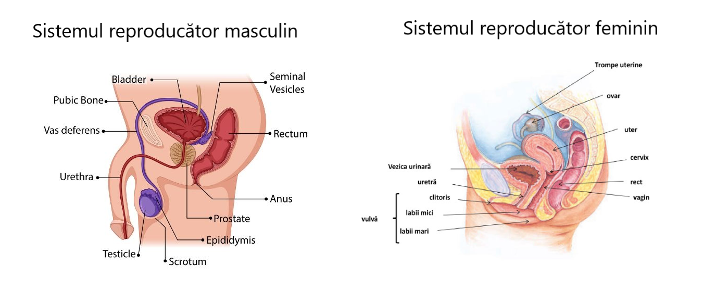

Descoperă structura și funcțiile sistemului reproducător.
Sistemul reproducător este ansamblul organelor care asigură reproducerea speciei umane prin producerea, maturarea și unirea celulelor germinale (gametelor), precum și susținerea dezvoltării embrionului. Este format din organe diferite la bărbat și femeie, cu funcții specifice în reproducere.
| Funcție | Descriere |
|---|---|
| Producerea gametelor | Spermatogeneza la bărbat (spermatozoizi), ovogeneza la femeie (ovule) |
| Fertilizarea | Întâlnirea și unirea spermatozoidului cu ovulul pentru formarea zigotului |
| Dezvoltarea embrionului | Oferă condiții pentru dezvoltarea și protecția embrionului (în uter la femeie) |
| Secreția hormonilor | Producerea hormonilor sexuali (testosteron, estrogen, progesteron) care reglează funcțiile sexuale și reproducerea |
| Sistem reproducător masculin | Sistem reproducător feminin |
|---|---|
| Testicule | Ovare |
| Epididim | Trompe uterine (trompe Fallopiene) |
| Canal deferent | Uter |
| Uretra | Vagin |
| Glandele anexă (prostată, vezicule seminale) | Vulvă, clitoris |
Formarea ovulelor în ovare
Formarea spermatozoizilor în testicule
Eliberarea ovulului matur din ovar
Fuziunea spermatozoidului cu ovulul, de obicei în trompa uterină
Implantarea zigotului în uter și dezvoltarea fătului
Expulzarea fătului prin canalul vaginal
Loc de secreție: Testicule
Rol principal: Dezvoltarea caracterelor sexuale masculine, spermatogeneza.
Loc de secreție: Ovare
Rol principal: Dezvoltarea caracterelor sexuale feminine, ciclul menstrual.
Loc de secreție: Ovare
Rol principal: Pregătirea uterului pentru sarcină, menținerea sarcinii.
Loc de secreție: Hipofiză
Rol principal: Stimulează maturarea ovulelor și spermatogeneza.
Loc de secreție: Hipofiză
Rol principal: Stimulează ovulația și secreția de testosteron.
| Afecțiune | Descriere |
|---|---|
| Infertilitatea | Incapacitatea de a concepe după un an de încercări |
| Endometrioza | Creșterea țesutului endometrial în afara uterului |
| Prostatita | Inflamație a prostatei |
| Varicocelul | Dilatarea venelor testiculare, afectează fertilitatea |
| Infecții cu transmitere sexuală (ITS) | Afectează funcția reproductivă, cauzează complicații |